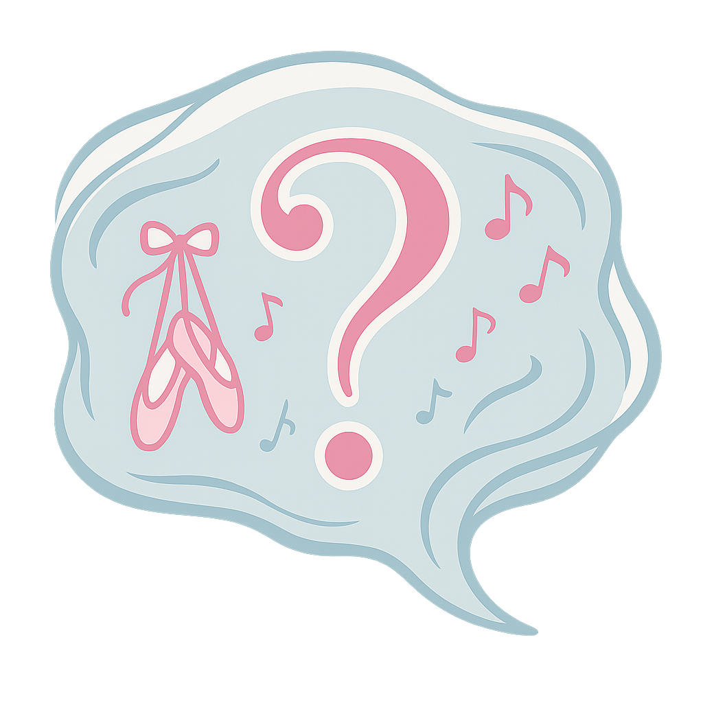
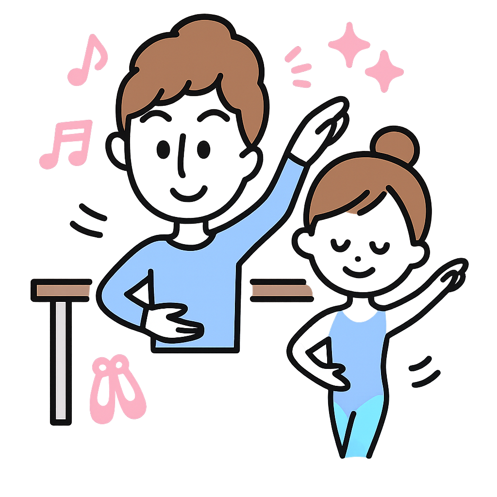

10代から80代まで通ってます
8割の生徒が初心者から
初心者でも安心！質問できる大人バレエレッスン
Y-de-ONEでは、初めての方でも安心してバレエを楽しんで
いただけるよう質問しやすい雰囲気と丁寧な指導を大切にしています。
質問しやすい雰囲気
一般的なバレエ教室とは違い、レッスン中でも気軽に質問できる環境です。わからないことをその場で解決できます。
一人ひとりをしっかり指導
先生が一人ずつ丁寧に声をかけ、個別に指導します。バレエ初心者の方でも安心して上達できます。
10代から80代まで
幅広い年齢層の方が通っています。50代、60代から始める方も多く、年齢を気にせずバレエを楽しめます。
入会金なし・無駄なく通える大人バレエ教室
Y-de-ONEは、一般的なバレエ教室とは違う特長があります。
Y-de-ONE ワイデワン
- ✓入会金：
なし（0円） - ✓料金システム ：
都度払い制（通うほどお得） - ✓質問のしやすさ：
いつでも気軽に質問OK - ✓指導方法：
一人ひとりをしっかり指導
一般的なバレエ教室
- ✕入会金：
あり（10,000円〜30,000円） - ✕料金システム ：
チケット制（期限切れで無駄に） - ✕質問のしやすさ：
質問しづらい雰囲気 - ✕指導方法：
先生が生徒に声をかけることは少ない
通えば通うほど
お得な
都度払いシステム
月に通う回数が多いほど、
1回あたりのレッスン料金が安くなる仕組みです。
期限切れでお金が無駄になることもなく、
自分のペースで安心して通えます。
Y-de-ONE - ワイデワンとは？
10代から80代まで通う
“大人のためのバレエ教室”。
初心者の方でも安心して通えるように、
基礎から丁寧に指導しています。
心と身体を自由に解き放ち、
踊ることで自分を表現できる
“魔法のようなダンススタジオ”です。
🩰 バレエ・モダン・コンテンポラリー
「踊ってみたい」「表現したい」
—— その気持ちを大切に。
Y-de-ONEでは、バレエの基礎をベースに
モダンやコンテンポラリーの要素を取り入れ、
音楽に合わせて自然に身体が動くよう導きます。
初心者から経験者まで、身体が硬くても
年齢に関係なく始められるのが特徴。
50代・60代からバレエを始める方も多いです。
🎵 主宰：青山佳樹
元ホルン奏者。
音楽と身体の一体感に魅せられ、
自らの表現を求めて“ダンス”という新たな道へ。
舞台・テレビ出演を経て、
音と身体の融合による
「心が軽くなる時間」を追求。
唯一無二のダンスクリエイターとして、
年齢や経験を問わず指導にあたる。
🕺✨ 大人から始める人を一番理解できる講師たち
Y-de-ONEの男性講師2人も、
子どもの頃ではなく“大人になってから”
ダンスを始めました。
だからこそ、
「新しいことに挑戦する勇気」や
「思うように体が動かないもどかしさ」を
誰よりも理解しています。
私たちは、生徒さん一人ひとりのペースに
合わせた言葉のかけ方、
その人の個性や目的に寄り添った
クラスづくりを大切にしています。
現在通ってくださっている生徒さんも、
ほとんどが大人になってから始めた方々。
笑いながら、時に真剣に、そして
妥協せずにレッスンを重ねています。
来てくださる皆さんが楽しみながら
上達していく姿を見られることが、
私たちの何よりの喜びです。
服装・年齢・レベル…大人バレエ初心者のよくある質問
バレエが初めての方からよくいただく質問をまとめました。
- もちろん大丈夫です。Y-de-ONEの生徒さんの約80％が初心者からスタートしています。最初から丁寧に指導しますので、安心してご参加ください。
- 動きやすい服装であれば何でもOKです。Tシャツとレギンス、ジャージなどで構いません。バレエシューズは無料でレンタルできます。
- はい、Y-de-ONEには50代、60代から始められる方が多数いらっしゃいます。年齢に関係なく、ご自分のペースで楽しんでいただけます。実際に80代の生徒さんもいらっしゃいます。
- 初心者クラスから経験者クラスまで、レベル別にクラスを設けています。体験レッスン時に、あなたに合ったクラスをご提案させていただきます。
- 月の1回目：3,300円、2回目：2,600円、3回目：2,400円...と通えば通うほど1回あたりの料金がお得になります。入会金は不要です。詳しくは体験レッスン時にご説明します。
- 問題ありません。バレエを続けることで、少しずつ柔軟性も向上していきます。無理のない範囲で、ご自分のペースで取り組んでいただけます。
- はい、遠慮なく質問してください。Y-de-ONEでは、質問しやすい雰囲気づくりを大切にしています。わからないことは、その場で解決できるようサポートします。
- もちろんです。男性の生徒さんも多数通われています。年齢・性別問わず、どなたでも歓迎します。
まだ不安がありますか？
他にもご質問がございましたら、お気軽にお問い合わせください。
まずは体験レッスンで雰囲気を感じてみませんか？